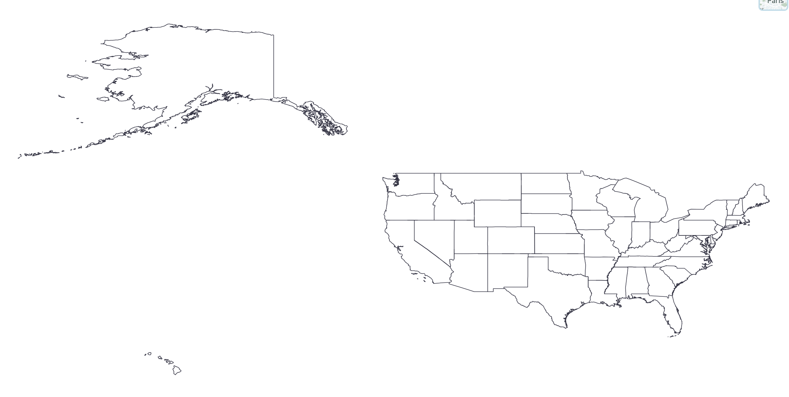

Week 8 Lab: Plotting and Troubleshooting GeoJSON with D3
CS-GY 6313 - Information Visualization
New York University
2025-10-24
Week 7 Lab Overview
| User Interface | Graphics Library | Notebook(s) |
|---|---|---|
| observablehq.com | D3 | Week 8 Lab Notebook |
Today’s Lab Activities
Today we will be a exploring the following topics:
- Group Projects: Proposal Feedback & Reminders
- Main Lab Activities:
- Understanding GeoJSON - What is it?
- Where to Find Map Data?
- ShapeFiles to GeoJSON
- Troubleshooting GeoJSON
- Practice: Creating Maps of Countries
Group Projects: Proposal Feedback & Reminders
- Projects range in topics from sound profiles to railway maps to health problems - good spread.
- Visualization implementations must be in D3. Data processing is up to you (e.g. Python).
- Strongly recommend either Framework or Observable Notebooks.
| Milestone | Due Date | Details |
|---|---|---|
| Data Analysis & Sketches | Nov 3 | Data tables and visualization sketches |
| First Draft | Nov 17 | Initial D3 implementations |
| Second Draft | Dec 1 | Refined narrative and polished visualizations |
| Final Submission | Dec 8 | Complete project with presentation |
Changes to Framework Guides
| URL To Guides | Example Github Repo | Example Dashboard |
|---|---|---|
| Framework Guides | Repository | Dashboard |
What is GeoJSON?
Definition
GeoJSON is an open standard format designed for representing simple geographical features, along with their non-spatial attributes. It is based on the JSON format. - Wikipedia
Example GeoJSON
GeoJSON Markup
{
"type": "Feature",
"geometry": {
"type": "Point",
"coordinates": [125.6, 10.1]
},
"properties": {
"name": "Dinagat Islands"
}
}One way to think about it:
- GeoJSON Markup Guide
- Your map is a the GeoJSON object, comprising of Segments
- Each Segment is a Feature.
- Each Feature has geometry and properties.
- Geometry can be a
Point,Polygon,MultiPolygon, etc. - `Properties hold additional info about the Feature (e.g. name, ID, code, zip code).
- Geometry can be a
- Each Feature has geometry and properties.
- Each Segment is a Feature.
Where can we Find Geodata?
- Older guides will commonly refer you to https://data.census.gov/. But…
- You can also likely find existing GeoJSON files in the wild, such as in Vega-Lite’s pre-existing US-Atlas GeoJSON, but you don’t really have much control over the fidelity and properties of the GeoJSON itself.
Step 1: Find an appropriate ShapeFile
- https://gadm.org/data.html: An open-source solution that’s freely accessible for academic and non-commercial usage. Recommended to download by country.
- https://www.naturalearthdata.com/: A sizeable repository of ShapeFiles for world regions.
Step 2: Simplify and convert from ShapeFile to GeoJSON
Step 3: Load, understand, and troubleshoot your GeoJSON
- Invert Latitude and Longitude Coordinates
- Reverse GeoJSON “Winding Order”
Let’s try Steps 1 and 2
Let’s download map data for the US states from https://gadm.org/data.html, then simplify using https://mapshaper.org/.
D3 GeoMaps
// Define parameters, svg, and chart (we've covered this by now a lot)
const width = 400, height = 250, margins=50;
// Create our SVG and Chart
// ...
// Need a projection, with `.scale()`, `.center()`, and `.translate()`
const projection = d3.geoMercator()
.scale(200)
.center([-98, 39]) // Lat/Lon of the U.S.
.translate([width/2, height*0.75]);
/*
// ALTERNATIVE: Let D3 attempt to fit the data
const projection = d3.geoMercator()
.fitSize([width, height], usa);
*/
// `d3.geoPath()` returns a function that can be called later.
const path = d3.geoPath().projection(projection);
// Render our chart.
chart.append("g")
.selectAll("path")
.data(usa.features)
.enter()
.append("path")
.attr("d", path) // Draw each state
.attr('fill','#ccc') // Stylize our states
.style("stroke", "#000");D3 GeoMaps… Wait, What?
// Define parameters, svg, and chart (we've covered this by now a lot)
const width = 400, height = 250, margins=50;
// Create our SVG and Chart
// ...
// Need a projection, with `.scale()`, `.center()`, and `.translate()`
const projection = d3.geoMercator()
.scale(200)
.center([-98, 39]) // Lat/Lon of the U.S.
.translate([width/2, height*0.75]);
/*
// ALTERNATIVE: Let D3 attempt to fit the data
const projection = d3.geoMercator()
.fitSize([width, height], usa);
*/
// `d3.geoPath()` returns a function that can be called later.
const path = d3.geoPath().projection(projection);
// Render our chart.
chart.append("g")
.selectAll("path")
.data(usa.features)
.enter()
.append("path")
.attr("d", path) // Draw each state
.attr('fill','#ccc') // Stylize our states
.style("stroke", "#000");Troubleshooting GeoJSON
Inverted Latitude and Longitude Coordinates
Sometimes, your GeoJSON will have inverted coordinates. **D3 expects coordinates to be [longitude, latitude]:
Point coordinates are in x, y order (easting, northing for projected coordinates, longitude, and latitude for geographic coordinates) - specs
Incorrect “Winding Order”
GeoJSON has an unspoken property called the “winding order”. Basically:
- Outer rings (the main polygon) should be counterclockwise (CCW).
- Inner rings (holes) should be clockwise (CW).
You may produce weird bugs if the winding order is reversed.
Projection Types in D3
Azumithal Projections (documentation)
d3.geoAzimuthalEqualArea()d3.geoAzimuthalEquidistant()d3.geoOrthographic()
Conic Projections (documentation)
d3.geoConicConformal()d3.geoConicEqualArea()d3.geoAlbers()- US-centric!
Cylindrical Projections )(documentation)
d3.geoMercator()d3.geoEquirectangular()d3.geoEqualEarth()
Practice: Produce 3 Graphs (15mins)
Attempt to generate the geodata of 3 separate countries other than the USA. You can use any of the references mentioned before for getting your ShapeFiles, converting them into GeoJSON, and troubleshooting their issues upon importing them.
- Try playing around with different geometries, ouside of just country borders.
- Try different projection types provided by D3
Final Reminders & Checks
- Lab Feedback Form - Due Anytime (optional)
- Data Analysis & Sketches - Due Nov 3 @ 11:59pm - Data tables and visualization sketches.
- Mini-Project #1: Due on Nov 6 @ 11:59pm